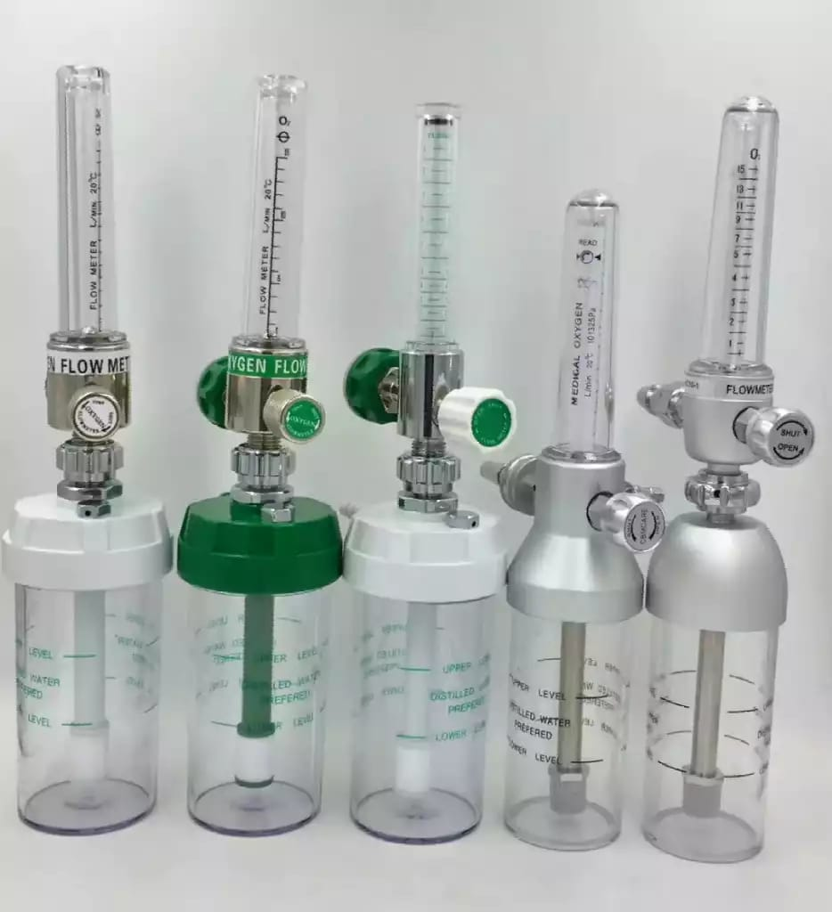

Medical Oxygen Flowmeters
These precise medical oxygen flowmeters provide accurate and reliable control of oxygen delivery. Designed for use in various healthcare settings, from hospitals and clinics to home healthcare, they ensure safe and effective oxygen therapy. The clear, easy-to-read flow indicators allow for precise adjustment, minimizing user error. Durable construction and high-quality materials ensure long-lasting performance.
Key Features:
| Feature | Description |
|---|---|
| Precise Flow Control | Accurately measures and regulates oxygen flow rate in liters per minute (L/min). |
| Clear Flow Indicators | Easy-to-read graduated tubes for quick and accurate flow rate monitoring. |
| Calibrated Measurement | Calibrated at standard temperature and pressure (20°C and 101325Pa) for reliable readings. |
| Durable Construction | Made from high-quality, medical-grade materials for long-lasting performance and resistance to damage. |
| Integrated Humidifier | A transparent humidifier bottle allows for easy monitoring of the distilled water level (this feature applies only to models with the humidifier chamber), maintaining appropriate humidity levels for oxygen delivery. |
| Easy-to-Use Design | Simple and intuitive design reduces the risk of operational errors. |
Applications:
| Application | Description |
|---|---|
| Hospitals | Oxygen therapy in various clinical settings (intensive care units, wards, etc.). |
| Clinics | Oxygen administration during medical procedures and patient recovery. |
| Home Healthcare | Providing supplemental oxygen therapy to patients in their homes. |
| Emergency Medical Services | Oxygen delivery during emergency situations. |